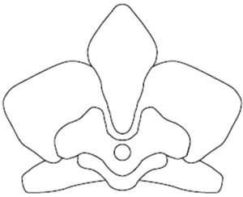

Trade Mark Journal No.2025/025 20 June 2025
WO0000001858129 (3,9,18,25)
Office of origin: European Union Intellectual Property Office (EUIPO)
Date of International Registration:6 March 2025
Date of designation in the UK:
6 March 2025

International priority date claimed: 15 January 2025
(European Union Intellectual Property Office (EUIPO))
(019131382)
- Class 3
- Perfume; perfumery; cologne; toilet water; cosmetic preparations; toiletries, not for medical purposes; hygienic and beauty preparations; cosmetic lotions for the body and hair; soaps for personal use; personal deodorants; essential oils for personal use; tissues impregnated with cosmetic lotions; shower gels; shampoo; cosmetic creams; cosmetic masks; oils for cosmetic purposes; cosmetics for children; make-up preparations; make-up foundations; lipstick; lip gloss; lip balms; lipstick cases; mascara; cosmetics for eyelashes; eyebrow cosmetics; make-up powder; make-up pencils; make-up removing preparations; skin cleansers; nail polish; nail gel; nail varnish removers; nail and hand care preparations; sunscreen preparations; tanning preparations; shaving and after-shave preparations; cosmetic kits; pot-pourri; scented sachets; air fragrancing preparations; household perfumes; incense; cleaning preparations for leather; creams for leather; boot cream and polish; shoemakers' wax.
- Class 9
- Navigation, photographic, cinematographic, audiovisual, optical, signaling and teaching apparatus and instruments; apparatus and instruments for recording, transmitting, reproducing or processing sound, images or data; recorded and downloadable media, computer software, blank digital or analogue recording and storage media; computers and computer peripheral devices; diving suits, divers' masks, ear plugs for divers, nose clips for divers and swimmers, gloves for divers, breathing apparatus for underwater swimming; LED [light-emitting diodes]; mobile phone; gps apparatus; protective helmets for sports; portable computers; electronic publications; smartphones; spectacles, eyeglasses, sunglasses, spectacle cases, chains and cords for eyeglasses; smartwatches; cases for smartphones; headphone cases; ear pads for headphones; headphones; battery chargers; USB chargers, covers for smartphones; goggles; protective masks; smartglasses; spectacle lenses; eyeglass lenses; optical lenses; filters for use in photography; smartphone accessories, namely sleeves, straps and lanyards for smartphones, earphones for smartphones, wireless headsets for smartphones, screen protectors for smartphones, smartphone screen magnifiers, selfie sticks used as smartphone accessories, selfie ring lights for smartphones, wireless charging pads for smartphones, chargers for smartphones, joysticks adapted for smartphones, cables for use with smartphones; lenses.
- Class 18
- Leather and imitations of leather; animal skins and hides; luggage and carrying bags; umbrellas and parasols; walking sticks; collars, leashes and clothing for animals; trunks and travelling bags; baggage; card holders; card cases; credit card holders made of leather; wallets; conference folders made of leather; hand bags; travel garment covers; make-up bags sold empty; sports bags; athletics bags; evening bags and shoulder bags; shopping bags; school book bags; travel bags for carrying shoes; beach bags; diaper bags; rucksacks; travelling cases; canvas bags; overnight bags; bags for climbers; satchels; leather handbags; vanity cases, not fitted; cases of leather or leather board; harness made from leather; leather leashes; briefcases; pocket wallets; tool bags of leather, empty; sling bags for carrying infants; bags; backpacks; wheeled shopping bags; bags for campers; pouches, of leather, for packaging; garment bags for travel; pouch baby carriers; valises; cosmetic cases sold empty; clothing for pets.
- Class 25
- Clothing; footwear; headwear; bandanas [neckerchiefs]; headbands [clothing]; stockings; bibs, not of paper; berets; smocks; boas [necklets]; teddies [undergarments]; hosiery; caps [headwear]; bathing caps; shower caps; boots; half-boots; suspenders; neck tube scarves or neck gaiters; camisoles; pants; bathing trunks; bodices [lingerie]; hoods [clothing]; belts [clothing]; money belts [clothing]; shawls; footmuffs, not electrically heated; sweaters; hats; headgear for wear; socks; slippers; football boots; beach shoes; driving shoes; sneakers; ski boots; boots for sports; shirts; short-sleeve shirts; tights; shoulder wraps; slips [undergarments]; combinations [clothing]; corselets; corsets [underclothing]; suits; swimsuits; beach clothes; ear muffs [clothing]; neckties; breeches for wear; babies' pants [clothing]; sashes for wear; shirt yokes; esparto shoes or sandals; fur stoles; detachable collars; sock suspenders; scarfs; furs [clothing]; gabardines [clothing]; girdles; galoshes; ski gloves; gloves [clothing]; vests; motorists' clothing; cyclists' clothing; top hats; waterproof clothing; leg warmers; stocking suspenders; garters; skirts; shorts; petticoats; layettes [clothing]; leggings [trousers]; singlets; cuffs; coats; mantillas; sleep masks; mittens; topcoats; trousers; parkas; dressing gowns; bath robes; pelisses; shirt fronts; ponchos; pullovers; pyjamas; dresses; jumper dresses; bath sandals; underpants; bath slippers; gymnastic shoes; sports shoes; underwear; anti-sweat underwear; brassieres; aprons [clothing]; heelpieces for footwear; heels; tee-shirts; knitwear [clothing]; uniforms; stuff jackets [clothing]; jackets [clothing]; clothing for gymnastics; clothing of leather; clothing of imitations of leather; visors [headwear]; cap peaks; veils [clothing]; terrycloth robes; towel robes; snow suits; ski suits; surf suits; sub suits; tuxedos; tuxedo belts; embroidered clothing; tuxedo shirts; embroidered dresses; embroidered stoles; stoles; overalls; dungarees; stoles of textile; outer clothing; undergarments; bermuda shorts; outer garments; quilted jackets, quilted coats; winter coats; winter jackets; rain coats; rainwear; winter clothing; rain proof clothing; rain proof footwear; rain proof headwear; balaclavas; denim clothing; eco-leather clothing; eco-leather footwear; eco-leather headwear; sports jerseys; sweatshirts; cashmere clothing; eco-fur clothing; racing suits and racing overalls.
GENNY S.R.L.
Representative: Sylvain Rousseau, Corso Regina Margherita 87, I-10124 Torino (TO), ITALY